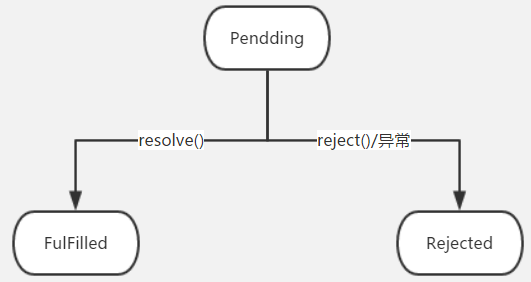
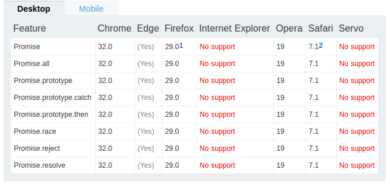
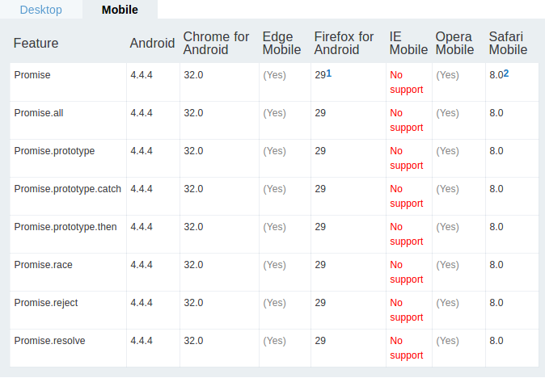

Promise是异步编程的一种解决方案，比传统的解决方案 - 回调函数和事件 - 更合理和更强大。
简单来说Promise就是一个容器，里面保存着某个未来才会结束的异步操作的结果。从语法上说，Promise是一个对象，通过它可以获取异步操作的消息。ES6中，Promise是一个构造函数，用来生成Promise实例。（本文会在创建和使用过程中介绍其中的概念）
创建
|
- Promise构造函数接受一个函数作为参数，该函数有两个参数 resolve 和 reject ， 它们是两个函数。
- resolve 函数的作用是，将Promise对象的状态从 “未完成”变为 “成功”（Pending -> Resolved），在异步操作成功时调用，并将异步操作的结果，作为参数传递出去； reject 函数的作用是，将Promise对象的状态从 “未完成” 变为 “失败”（Pending -> Rejected），在异步操作失败时调用，并将异步操作报出的错误作为参数传递出去。
- Promise实例生成以后，可以用 then 方法 指定 Resolved 状态和 Reject 状态的回调函数。
其中resolve函数的参数除了正常的值以外，还可能是另一个Promise实例，表示异步操作的结果可能是一个值，也有可能是另一个异步操作。这时promise通过then指定的回调会等待另一个promise实例状态发生变化后才会进行调用。
|
promise2等待2s之后输出了promise中的值，这时promise的状态会传递给promise2, promise的状态决定了promise2的状态。
状态变化
promise对象有三种状态
- Pending （进行中）
- Resolved （已完成， 又称为Fulfilled）
- Rejected （已失败）

Promise的状态变化只有上图两条路径，resolve 方法会使Promise对象由Pendding状态变为Resolved状态；reject 方法或者异常会使得Promise对象由pendding状态变为Rejected状态。
对象状态一旦改变，任何时候都能得到这个结果。即状态一旦进入Resolved状态或者Rejected状态， promise对象便不再出现状态变化，同时我们再添加回调会立即得到结果。这点跟事件不一样，事件是发生后再绑定监听，就监听不到了。
|
then
Promise实例生成以后，可以用 then 为实例添加状态改变时的回调函数。then方法是定义在Promise构造函数的原型上，Promise.ptototype.then。
第一个参数是Resolved状态的回调函数，第二个参数（可选）是Rejected状态的回调函数。
then调用会返回promise的一个新的实例，因此可以采用链式写法。其中后一个promise实例会依赖上一个promise实例的状态，如果上一个promise实例状态是Rejected,则后面的promise实例状态也是Rejected。
采用链式调用的then可以指定一组按照次序调用的回调函数，如果前一个回调函数返回的是一个promise对象（有异步操作），这时后一个回调函数会等待该promise对象状态发生变化时，才会进行调用。
|
错误处理
Promise对象除了使用then传递异常回调之外，还可以使用 catch 方法，用于指定错误时的回调。catch的功能更强大，书写方式也更流畅。Promise对象的错误具有冒泡性质，会一直向后传递，直到捕获为止。也就是说，错误总是会被下一个catch语句捕获。
|
一般来说，不要在then方法里面定义Reject状态的回调函数，总是使用catch捕获错误。
Promise与循环
前面提到了Promise可以指定一组异步操作顺序执行，那如果我们需要等待一组异步操作之后结束之后再执行呢？ Promise提供了一个很方便的方法 Promise.all 。
|
Promise.all方法用于将多个Promise实例，包装成一个新的Promise实例。
Promise.all方法接受一个promise实例数组作为参数（可以不是数组，但需要具有iterator接口），
如果元素不是Promise实例，就会先调用Promise.resolve方法，将参数转为Promise实例，再进一步处理。
Promise.all方法返回的promise实例状态分为两种情况：
- 实例数组中所有实例的状态都变成Resolved， Promise.all返回的实例才会变成Resolved， 并将Promise实例数组的所有返回值组成一个数组，传递给回调函数。
- 实例数组中某个实例变为了Rejected状态，Promise.all返回的实例会立即变为Rejected状态。并将第一个Rejected的实例的返回值传递给回调函数。
|
Promise.race 方法跟Promise.all方法差不多。唯一的区别在于该方法返回的Promise实例并不会等待所有Proimse都跑完，而是只要有一个Promise实例改变状态，它就跟着改变状态。并使用第一个改变状态实例的返回值作为返回值。
兼容性

pc

mobile
参考资料
Promises/A+
Promise对象
打开promise的正确姿势